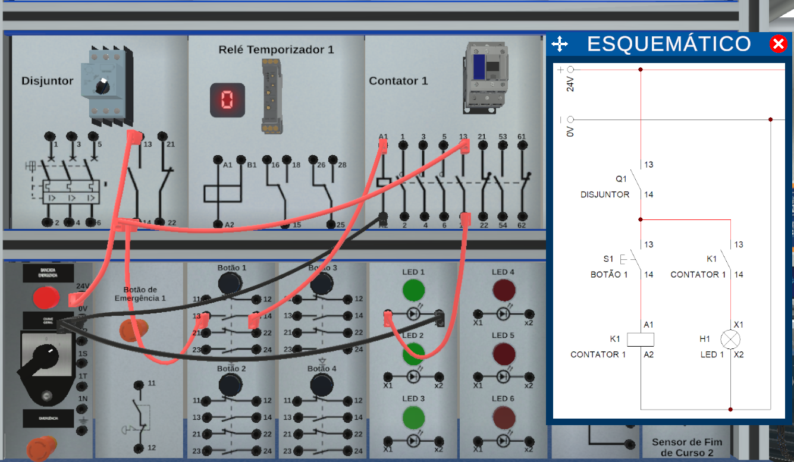
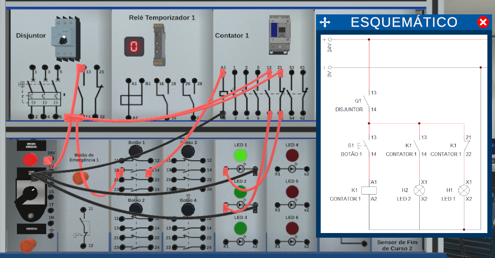
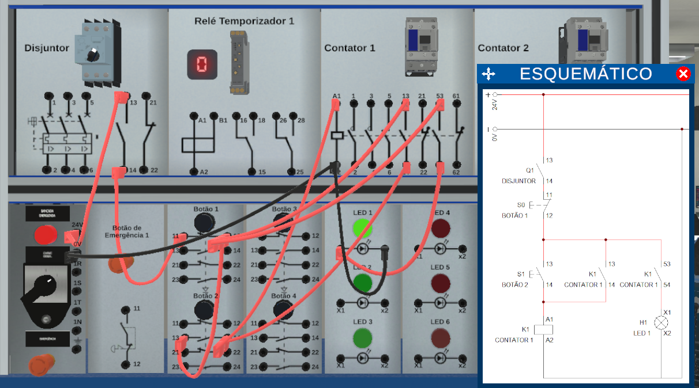
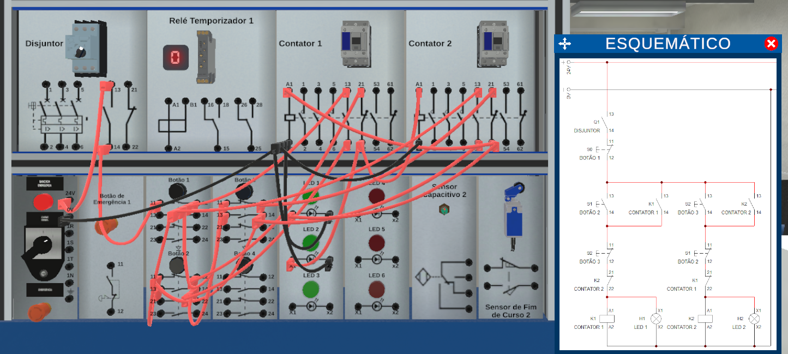
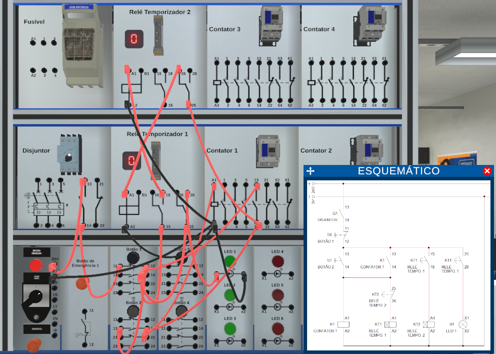
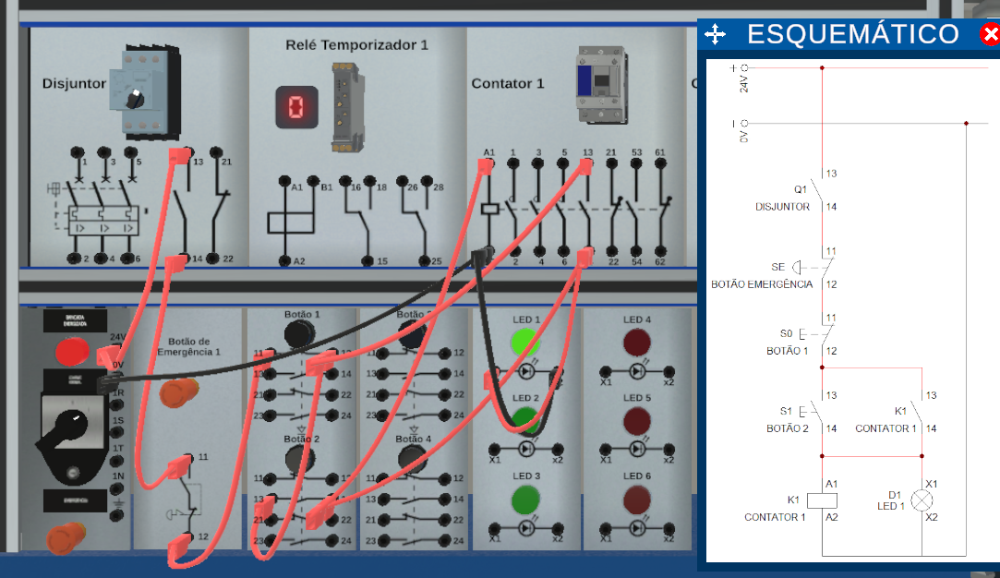
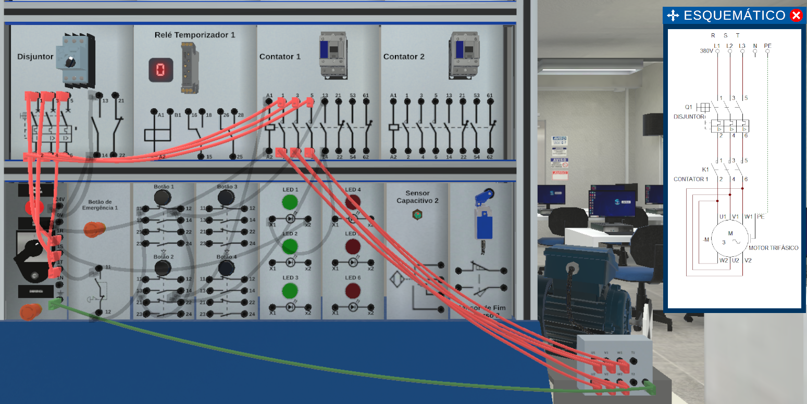
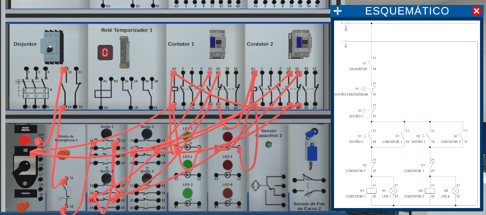
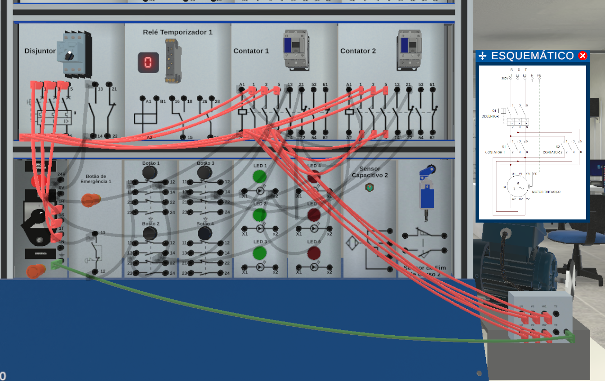

Projetos do Laboratório Digital
Todas as 12 simulações elétricas feitas no Laboratório Digital e no Cade_Simu mostrando a descrição junto com o funcionamento
Prática 1
A pratica 1 é o acionamento de um LED direto, bem simples

Prática 2
A pratica 2 é o acionamento de um LED utilizando um disjuntor para proteger, abrir e desligar o circuito de passagem da corrente elétrica.

Prática 3
A prática 3 é o acionamento de um LED utilizando o botão NA e NF. enquanto um led está ligado, o outro fica desligado.

Prática 4
A prática 4 é o acionamento de um LED utilizando um contator. Ao ligar o disjuntor, a bobina do contator é energizada, fechando o circuito e permitindo a passagemn de corrente elétrica no LED.

Prática 5
A prática 5 é o acionamento de dois LEDs utilizando um contator. um LED está no botão NA e o outro no NF. Apos o contator fechar a passagem do circuito, enquanto o botão não estiver pressionado, o LED ligado ao NF está acesso. Quando pressionado, o LED ligado ao NF vai desligar o botão ligado ao NA vai acender.

Prática 6
A prática 6 é o acionamento de um LED utilizando o contato selo. O contato selo é um método utilizado para manter um circuito energizado mesmo após o botão de pulso ser liberado.

Prática 7
A prática 7 é o acionamento de dois LEDs com o comando de reversão. Método utilizado para alternar a direção de operação de um equipamento, como um motor.

Prática 8
A prática 8 é o acionamento de LED utilizando o relé temporizador. Dispositivo que permite a operação de circcuitos elétricos com intervalo de tempos programado;

Trilha de Partidas
Partida Direta(prática 9 - 10)
Partida direta do motor trifásico faz ele girar apenas no sentido horário. Utiliza dispositivos de segurança como Relé termico(temperatura) e disjuntores(curto-circuito e sobrecarga), botões e contatores para a passagem de circuito dividos em circuitos de comando e de potência.
Circuito de Comando
Responsável por controlar cargas com baixa tensão

Circuito de Potência
Responsável por acionar/ligar cargas/motores de alta tensão.

Partida Reversora
Partida Reversora do motor trifásico permite o motor girar tanto no sentido horário como no sentido antihorário revertendo as duas fases entre si para mudar o sentido do giro.
Circuito de Comando
Pressionar o Botao B1/B2 faz o selo com o contator e liga o intertravamento do contator NF para evitar que os dois botões sejam acionados ao mesmo tempo.

Circuito de Potência
Após pressionar o botão, o disjuntor e o contator fecham a passagem fazendo a corrente ir direto para o motor, fazendo ele girar no sentido horário ou antihorário.
